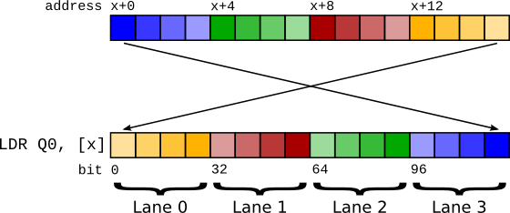
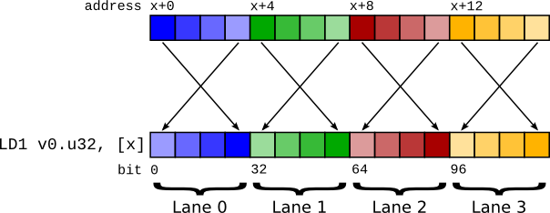
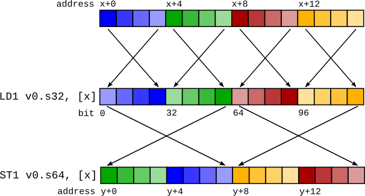
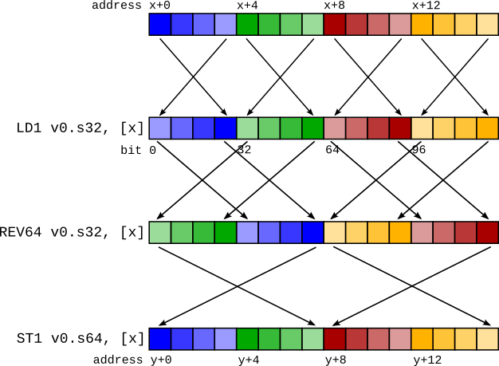

Using ARM NEON instructions in big-endian mode#
Introduction#
Generating code for big-endian ARM processors is straightforward for the most part. NEON loads and stores, however, have some interesting properties that make code generation decisions less obvious in big-endian mode.
The aim of this document is to explain the problem with NEON loads and stores, and the solution that has been implemented in LLVM.
In this document, the term “vector” refers to what the ARM ABI calls a “short vector”, which is a sequence of items that can fit in a NEON register. This sequence can be 64 or 128 bits in length, and can constitute 8, 16, 32 or 64 bit items. This document refers to A64 instructions throughout, but is almost applicable to the A32/ARMv7 instruction sets also. The ABI format for passing vectors in A32 is slightly different to A64. Apart from that, the same concepts apply.
Example: C-level intrinsics -> assembly#
It may be helpful to first illustrate how C-level ARM NEON intrinsics are lowered to instructions.
This trivial C function takes a vector of four ints and sets the zero’th lane to the value “42”:
#include <arm_neon.h>
int32x4_t f(int32x4_t p) {
return vsetq_lane_s32(42, p, 0);
}
arm_neon.h intrinsics generate “generic” IR where possible (that is, normal IR instructions, not llvm.arm.neon.* intrinsic calls). The above generates:
define <4 x i32> @f(<4 x i32> %p) {
%vset_lane = insertelement <4 x i32> %p, i32 42, i32 0
ret <4 x i32> %vset_lane
}
Which then becomes the following trivial assembly:
f: // @f
movz w8, #0x2a
ins v0.s[0], w8
ret
Problem#
The main problem is how vectors are represented in memory and in registers.
First, a recap. The “endianness” of an item affects its representation in memory only. In a register, a number is just a sequence of bits - 64 bits in the case of AArch64 general-purpose registers. Memory, however, is a sequence of addressable units of 8 bits in size. Any number greater than 8 bits must therefore be split up into 8-bit chunks, and endianness describes the order in which these chunks are laid out in memory.
A “little endian” layout has the least significant byte first (lowest in memory address). A “big endian” layout has the most significant byte first. This means that when loading an item from big endian memory, the lowest 8-bits in memory must go in the most significant 8-bits, and so forth.
LDR and LD1#

Big endian vector load using LDR.#
A vector is a consecutive sequence of items that are operated on simultaneously. To load a 64-bit vector, 64 bits need to be read from memory. In little-endian mode, we can do this by just performing a 64-bit load - LDR q0, [foo]. However, if we try this in big-endian mode, because of the byte swapping the lane indices end up being swapped! The zero’th item as laid out in memory becomes the n’th lane in the vector.

Big endian vector load using LD1. Note that the lanes retain the correct ordering.#
Because of this, the LD1 instruction performs a vector load but performs byte swapping not on the entire 64 bits, but on the individual items within the vector. This means that the register content is the same as it would have been on a little-endian system.
It may seem that LD1 should suffice to perform vector loads on a big-endian machine. However, there are pros and cons to the two approaches that make it less than simple which register format to pick.
There are two options:
The content of a vector register is the same as if it had been loaded with an
LDRinstruction.The content of a vector register is the same as if it had been loaded with an
LD1instruction.
Because LD1 == LDR + REV and similarly LDR == LD1 + REV (on a big-endian system), we can simulate either type of load with the other type of load plus a REV instruction. So we’re not deciding which instructions to use, but which format to use (which will then influence which instruction is best to use).
Note that throughout this section, we only mention loads. Stores have exactly the same problems as their associated loads, so have been skipped for brevity.
Considerations#
LLVM IR Lane ordering#
LLVM IR has first class vector types. In LLVM IR, the zero’th element of a vector resides at the lowest memory address. The optimizer relies on this property in certain areas, for example, when concatenating vectors together. The intention is for arrays and vectors to have identical memory layouts - [4 x i8] and <4 x i8> should be represented the same in memory. Without this property, there would be many special cases that the optimizer would have to cleverly handle.
Use of LDR would break this lane ordering property. This doesn’t preclude the use of LDR, but we would have to do one of two things:
Insert a
REVinstruction to reverse the lane order after everyLDR.Disable all optimizations that rely on lane layout, and for every access to an individual lane (
insertelement/extractelement/shufflevector) reverse the lane index.
AAPCS#
The ARM procedure call standard (AAPCS) defines the ABI for passing vectors between functions in registers. It states:
When a short vector is transferred between registers and memory, it is treated as an opaque object. That is a short vector is stored in memory as if it were stored with a single
STRof the entire register; a short vector is loaded from memory using the correspondingLDRinstruction. On a little-endian system, this means that element 0 will always contain the lowest addressed element of a short vector; on a big-endian system element 0 will contain the highest-addressed element of a short vector.— Procedure Call Standard for the ARM 64-bit Architecture (AArch64), 4.1.2 Short Vectors
The use of LDR and STR as the ABI defines has at least one advantage over LD1 and ST1. LDR and STR are oblivious to the size of the individual lanes of a vector. LD1 and ST1 are not - the lane size is encoded within them. This is important across an ABI boundary because it would become necessary to know the lane width the callee expects. Consider the following code:
<callee.c>
void callee(uint32x2_t v) {
...
}
<caller.c>
extern void callee(uint32x2_t);
void caller() {
callee(...);
}
If callee changed its signature to uint16x4_t, which is equivalent in register content, if we passed as LD1 we’d break this code until caller was updated and recompiled.
There is an argument that if the signatures of the two functions are different then the behaviour should be undefined. But there may be functions that are agnostic to the lane layout of the vector, and treating the vector as an opaque value (just loading it and storing it) would be impossible without a common format across ABI boundaries.
So to preserve ABI compatibility, we need to use the LDR lane layout across function calls.
Alignment#
In strict alignment mode, LDR qX requires its address to be 128-bit aligned, whereas LD1 only requires it to be as aligned as the lane size. If we canonicalised on using LDR, we’d still need to use LD1 in some places to avoid alignment faults (the result of the LD1 would then need to be reversed with REV).
Most operating systems, however, do not run with alignment faults enabled, so this is often not an issue.
Summary#
The following table summarises the instructions that are required to be emitted for each property mentioned above for each of the two solutions.
|
|
|
|---|---|---|
Lane ordering |
|
|
AAPCS |
|
|
Alignment for strict mode |
|
|
Neither approach is perfect, and choosing one boils down to choosing the lesser of two evils. The issue with lane ordering, it was decided, would have to change target-agnostic compiler passes and would result in a strange IR in which lane indices were reversed. It was decided that this was worse than the changes that would have to be made to support LD1, so LD1 was chosen as the canonical vector load instruction (and by inference, ST1 for vector stores).
Implementation#
There are 3 parts to the implementation:
Predicate
LDRandSTRinstructions so that they are never allowed to be selected to generate vector loads and stores. The exception is one-lane vectors [1]; by definition, these cannot have lane ordering problems so are fine to useLDR/STR.Create code generation patterns for bitconverts that create
REVinstructions.Make sure appropriate bitconverts are created so that vector values get passed over call boundaries as 1-element vectors (which is the same as if they were loaded with
LDR).
Bitconverts#

The main problem with the LD1 solution is dealing with bitconverts (or bitcasts, or reinterpret casts). These are pseudo instructions that only change the compiler’s interpretation of data, not the underlying data itself. A requirement is that if data is loaded and then saved again (called a “round trip”), the memory contents should be the same after the store as before the load. If a vector is loaded and then bitconverted to a different vector type before being stored, the round trip will currently be broken.
Take this code sequence, for example:
%0 = load <4 x i32> %x
%1 = bitcast <4 x i32> %0 to <2 x i64>
store <2 x i64> %1, <2 x i64>* %y
This would produce a code sequence such as that in the figure on the right. The mismatched LD1 and ST1 cause the stored data to differ from the loaded data.
When we see a bitcast from type X to type Y, what we need to do is to change the in-register representation of the data to be as if it had just been loaded by a LD1 of type Y.

Conceptually, this is simple - we can insert a REV undoing the LD1 of type X (converting the in-register representation to the same as if it had been loaded by LDR) and then insert another REV to change the representation to be as if it had been loaded by an LD1 of type Y.
For the previous example, this would be:
LD1 v0.4s, [x]
REV64 v0.4s, v0.4s // There is no REV128 instruction, so it must be synthesizedcd
EXT v0.16b, v0.16b, v0.16b, #8 // with a REV64 then an EXT to swap the two 64-bit elements.
REV64 v0.2d, v0.2d
EXT v0.16b, v0.16b, v0.16b, #8
ST1 v0.2d, [y]
It turns out that these REV pairs can, in almost all cases, be squashed together into a single REV. For the example above, a REV128 4s + REV128 2d is actually a REV64 4s, as shown in the figure on the right.